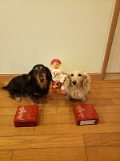
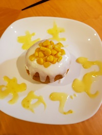
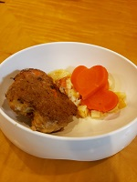

記念日やイベントのある時期に特別に作っているドックフード以外のメニューを作り方から紹介するページです。
また、具合の悪い時や食欲がないときに役立つおかゆの作り方も紹介しています。
お散歩にぴったりなスポットを紹介します。お手軽な場所はもちろん、旅行にぴったりな場所も...。
お家でできるワンちゃんのお手入れを紹介します。お店で頼むとお金がかかるシャンプーもお家でやってみましょう！
ワンちゃんはきれいになって、節約もできて一石二鳥です。
我が家のダックスの写真を、季節に分けて紹介します。イベントごとにコスプレさせてます。